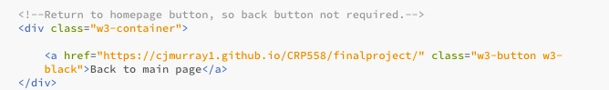
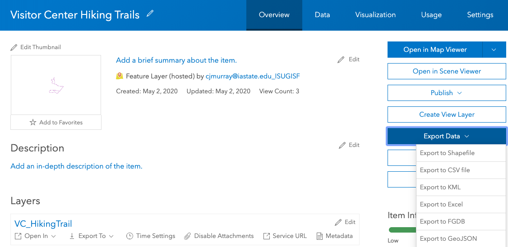

Caroline Murray
This project was designed as a way to deliver trail information to the public. While I was unable to coordinate with the US Army Corps of Engineers to insert the map that I created into an existing web page, hopefully, once full staff is available again, I can get it published through their web page.
One really important element of this project was that it had to be easily updated, especially because I will not be a park ranger at Saylorville lake forever. To do this, I created a separate "Trail Closures" page that is linked in the marquee banner. I used examples from other websites managed by the federal government, including the NRRS.gov (recreation service) webpage to find a suitable "alerts" banner.Then, I linked to the closures page in the banner. Having a single page that has simple formatting makes it mor easily updated, and I added comments to hopefully assist the process.
Part of the "Trail Closures" page was making sure that users could easily return to the main page. To make it a little more interesting than a simply hyperlink, I added a button using CSS.
This section of the web page is more for visual appeal than anything. Most of the folks I run into out at the lake don't even know that these smaller hiking trails even exist, so hopefully the photos interest people in using the trails. I used CSS code found on W3Schools to create this imagery gallery that has captions below each picture.
I did all of my data collection usign ArcCollector on my smartphone. The accuracy was set to a minimum of 20ft, which was actually fairly difficult to obtain using GPS services. In the future, I would use a Trimble or other higher accuracy device.
I decided to create a custom basemap in Mapbox to hopefully eliminate some distracting labels from bars/restaurants/other stores, and put more focus on natural areas and points of interest. I did this by making the density of stores, etc 0, and upping the density of natural areas as high as it would go. I also changed the opacity of the satellite imagery a bit to put a little more focus on the GeoJSON lines files. Finally, I altered the color scheme to have green labels to match the nature theme.
Because I did all of my data collection in ArcCollector, I had to convert all of my layer files to GeoJSON files. Luckily, ArcOnline makes it very easy to export data to this file type. The only snag was going into my newly created GeoJSON files and adding quotation marks around length attributes. In Arc, I had designated my "length" field as numeric instead of text or string, so when I went to add popups to my GeoJSON, it didn't recognize the numbers until I added quotations.
I used color brewer to choose a theme for my different trail styles. I decided to make "Easy" trails a light color and "Moderate" trails teal using the "switch" and "case" function that are outlined in the leaflet tutorials. I ran into lots of problems trying to make a qualitative legend, so settled for a memo above the map frame about colorations.

To make the map a bit more user friendly, I added a function to zoom into a feature on map click. This really helps take a closer look at the natural area around each trail. I also added popups to all of the hiking trails (except the Neal Smith Trail) that show length in miles. I left out the Neal Smith Trail because I denoted the trail length in my introduction paragraph. For the Neal Smith, however, I added popups to the mile markers that are physically posted along the trail. This helps bicyclists and hikers determine distance traveled and is also invaluable to first responders when determining victim location on the trail.
Overall, this was a fun project. I really wanted to make a tool that is useful for the public, without all of the advertisements and distractions that come from using websites like Alltrails.com (and others). In additon, it is super helpful to trail users to know more "insider" information, like why trees are being removed in certain recreations areas. This "insider" information eliminates lots of angry phone calls from the public! In the future, I hope to see this map expanded to include pop-up pictures, and have it incorporated into a US Army Corps Trails Webpage.